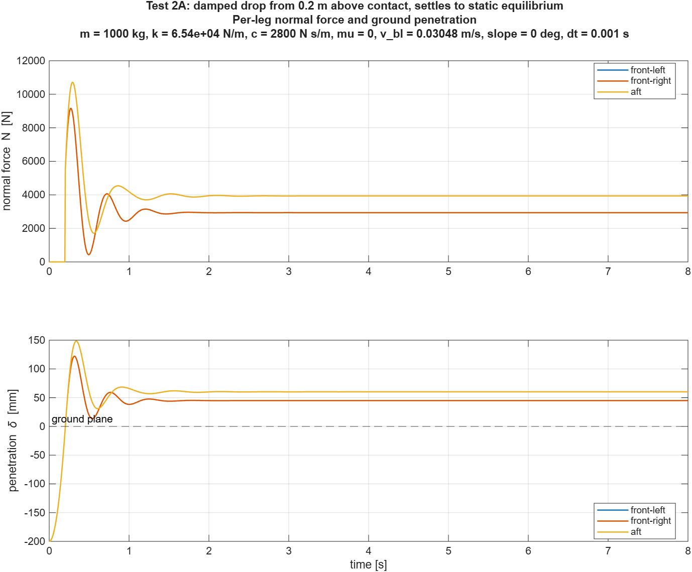
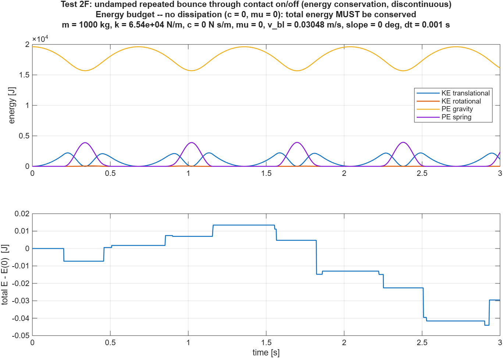
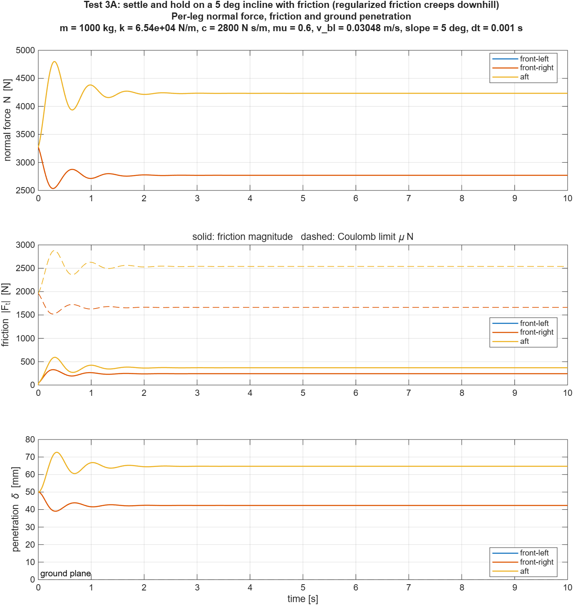
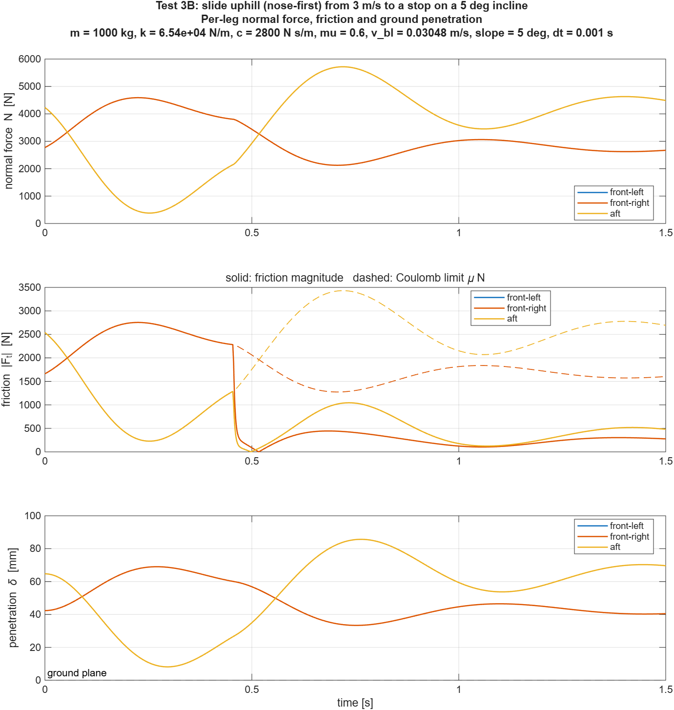
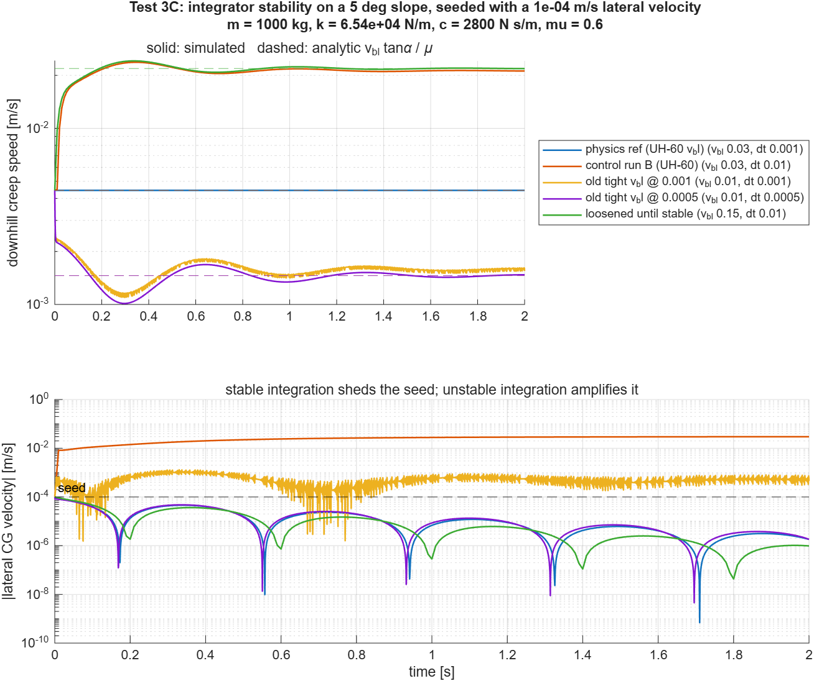

A minimal 6-DOF landing simulator was built from scratch in MATLAB as a controlled testbed for comparing physics-based friction at dt = 0.001 s against a future machine-learning friction model at dt = 0.01 s. Steps 1–3 of the build plan are complete and verified:
Key finding. The build plan's timestep analysis considered friction resisting translation only. Because the feet sit 1.8 m below the CG, friction also resists roll, and the roll inertia is small. The true stiffest friction mode is ~6× faster than planned (−3,454 rad/s at the original boundary layer), which made the planned dt = 0.001 physics reference numerically unstable. A laterally symmetric test cannot detect this — it passes perfectly — so the stability test seeds lateral motion deliberately.
Resolution: the friction boundary layer was raised to match the UH-60 model's value (LG_VBL = 0.1 ft/s = 0.03048 m/s). The dt = 0.001 reference is now stable and verified. At dt = 0.01, physics friction remains unstable and chatters at ~21 mm/s of creep regardless of the requested boundary layer — the concrete gap an ML model at dt = 0.01 would need to close (target 4.4 mm/s).
The parent project uses the PSUHeloSim UH-60 flight dynamics model. Its real-time simulator cannot run below dt ≈ 0.01 s without missing frame deadlines, but ground-contact and friction fidelity require a much smaller step. The research question is whether a learned friction model running at the coarse step can match physics friction running at the fine step.
The full UH-60 model is too coupled to answer that cleanly — a difference in output could come from the friction model or from any of a dozen interacting subsystems. This testbed strips the problem to a rigid body, three contact points, a planar floor, and friction, so that friction is the only source of numerical stiffness and any measured difference is attributable to it.
A rectangular box stands in for the fuselage, with three legs in a helicopter-like tricycle stance: two forward legs splayed outboard and one aft. Legs are rigid struts with a compliant foot (penalty contact) — there is no unsprung mass. This is deliberate: it keeps the normal-direction dynamics soft (√(3k/m) ≈ 14 rad/s) so that friction regularization is the only stiff element.
| Parameter | Value | Basis |
|---|---|---|
| Mass m | 1000 kg | Round number; not a scale model of the UH-60 |
| Inertia Ixx, Iyy, Izz | 667, 8667, 8667 kg·m² | Solid box 10 × 2 × 2 m; Iyy/Ixx = 13 (rolls far more easily than it pitches) |
| Leg stiffness k (each) | 6.54×10⁴ N/m | Sized for 5 cm mean static deflection: k = mg / (3 × 0.05) |
| Leg damping c (each) | 2800 N·s/m | Heave damping ratio ζ = 0.30 (visibly underdamped, errors easy to see) |
| Friction coefficient μ | 0.6 | Dry rubber-like; UH-60 model uses 0.5 (see Section 11) |
| Friction boundary layer vbl | 0.03048 m/s | = 0.1 ft/s, matched to UH-60 LG_VBL (was 0.01 m/s; Section 8) |
| Physics / ML timesteps | 0.001 / 0.01 s | Study design |
| Integrator | fixed-step RK4 | Hand-written: the study is about dt, so it must be explicit, not solver-chosen |
Inertial frame is NED (x North, y East, z down); altitude = −z. Body frame is x forward, y right, z down, origin at the CG; Euler sequence 3-2-1. SI units throughout. The state has 12 elements:
x = [ u v w | p q r | phi theta psi | xN yE zD ] body velocity | body rates | Euler angles | NED position Vdot_b = F_b / m - omega x V_b (Newton, rotating frame) omegadot_b = I^-1 ( M_b - omega x (I omega) ) (Euler's equations) phidot = p + sin(phi) tan(theta) q + cos(phi) tan(theta) r thetadot = cos(phi) q - sin(phi) r psidot = (sin(phi) q + cos(phi) r) / cos(theta) Pdot_i = R_b2i V_b F_gravity_b = R_b2i' [0; 0; m g] (derived from R, never written separately)
The ground is a plane with unit normal n (pointing into the ground). For each leg, every derivative evaluation:
P_foot = P_cg + R_b2i p_foot_b foot position, inertial delta = n . (P_foot - p0) penetration along the terrain normal (> 0 = contact) V_foot = R_b2i (V_b + omega x p_foot_b) N = max( k delta + c (n . V_foot), 0 ) ground pushes, never pulls v_t = V_foot - (n . V_foot) n tangential slip velocity F_t = -mu N v_t / max(|v_t|, v_bl) regularized Coulomb friction (swappable) F_foot_b = R_b2i' ( F_t - N n ) ONE inertial vector, rotated to body BEFORE summing M_foot_b = p_foot_b x F_foot_b moment about the CONTACT POINT
The last two lines carry forward the lesson from the UH-60 LandingGear.m bug found earlier in this project, where a terrain-frame friction force was concatenated with a body-frame strut force and the friction moment was taken about the axle rather than the contact patch. The friction model is passed in as a function handle, so the ML comparison is a one-line change with every other part of the model held bit-for-bit identical.
The guiding rule is use an exact pass criterion wherever exactness is physically achievable, because a tight tolerance surfaces mistakes that a loose one hides. Three examples: RK4 integrates constant acceleration exactly, so free fall is checked at machine precision; the leg geometry is exactly laterally symmetric, so roll and yaw under a symmetric drop must be identically zero; and energy conservation is checked separately in a smooth regime and across contact discontinuities so the two error sources can be told apart. Every run also passes a common set of safety checks: no NaN/Inf, no adhesion (N ≥ 0), contact flags consistent with force, and friction never exceeding μN.
Pass criterion: the inertial trajectory must match P(t) = P(0) + V(0)t + ½[0, 0, g]t² to machine precision.
| Case | Max position error | Attitude drift | Body rates | Result |
|---|---|---|---|---|
| 1a — level, at rest | 1.33×10⁻¹³ m | 0 | 0 | PASS |
| 1b — level, translating | 1.33×10⁻¹³ m | 0 | 0 | PASS |
| 1c — tilted (20°, −15°, 30°), translating | 2.78×10⁻¹³ m | 0 | 0 | PASS |
Case 1c is the meaningful one: with gravity resolved through a rotated body frame and no moments acting, the inertial acceleration must still be exactly [0, 0, g] and the attitude must stay frozen. That validates the rotation matrix and the gravity transform simultaneously.
The static equilibrium is not level. With feet at x = +2, +2, −3 m, equal leg loads would leave a 3270 N·m pitch moment, so the aft leg carries more load and the body sits slightly nose-up. The exact equilibrium was solved independently of the model code (Newton iteration on hand-derived force and moment balance) and the simulation compared against it:
| Check | Result | Tolerance | |
|---|---|---|---|
| Leg loads at equilibrium (FL, FR, aft) | 2937.62, 2937.62, 3934.77 N | — | |
| Penetrations (FL, FR, aft); mean | 44.92, 44.92, 60.16 mm; 50.00 mm | — | |
| Equilibrium pitch | 0.003049 rad (0.175°) | — | |
| 2A — settled state vs. exact equilibrium | ΔN 6.2×10⁻⁶ N, Δθ 1.8×10⁻¹¹ rad | 10⁻², 10⁻⁷ | PASS |
| 2B — force balance |ΣN − mg| | 1.9×10⁻⁶ N | 10⁻³ | PASS |
| 2B — moment balance |M| | 1.8×10⁻⁵ N·m | 10⁻² | PASS |
| 2C — hold at equilibrium for 2 s | 2.3×10⁻¹¹ m, 2.6×10⁻¹¹ rad | 10⁻⁴ | PASS |
| 2D — roll and yaw, symmetric drop | identically 0 | 10⁻¹⁰ | PASS |
| 2E — energy drift, c = 0, continuous contact | 1.9×10⁻¹³ (relative) | 10⁻⁸ | PASS |
| 2F — energy drift, c = 0, repeated bounce | 2.2×10⁻⁶ (relative) | 10⁻³ | PASS |


The contact model was generalized from a flat z = 0 floor to an arbitrary plane. On flat ground the generalized model reproduces every step-1 and step-2 result bit-identically. The incline rises toward North; μ = 0.6, vbl = 0.03048 m/s. Validation runs use dt = 0.001, but only after a linearization gate confirms that step is stable for the configured boundary layer (max |R(hλ)| = 0.998 < 1).
Why regularized friction creeps. To generate the downhill-resisting force mg sin α inside the boundary layer, the law F = μN·v/vbl needs a non-zero sliding speed. In steady state this gives an exact prediction: vcreep = vbl tan α / μ = 4.444 mm/s. The vehicle cannot hold perfectly still — this is the regularization artifact the whole study is about.
| Check | Simulated | Analytic | Error | |
|---|---|---|---|---|
| Creep speed (downhill) | 4.444424×10⁻³ m/s | 4.444424×10⁻³ m/s | 2.4×10⁻⁸ rel. | PASS |
| Sum of normal forces | 9772.6700 N | mg cos α = 9772.6700 N | 4.4×10⁻⁷ N | PASS |
| Total friction, uphill | 854.9978 N | mg sin α = 854.9978 N | 1.4×10⁻⁶ N | PASS |
| Force / moment balance | 1.4×10⁻⁶ N / 6.3×10⁻⁶ N·m | 0 | tol 10⁻² | PASS |
| Holding, not sliding: max |Ft| / μN | 0.146 | < 1 | — | PASS |
| Roll, yaw, v, p, r | identically 0 | 0 | tol 10⁻¹⁰ | PASS |
The body settles at 5.256° pitch — the 5° slope plus a 0.256° offset from the uneven leg loads, which the uphill friction acting below the CG increases relative to flat ground (leg loads 2769.97 / 2769.97 / 4232.73 N).

Distance is measured until speed first drops below 0.10 m/s — more than 3× vbl, so the boundary layer plays no part. The 2% tolerance reflects the quasi-static assumption ΣN = mg cos α, which the pitch/heave transient from sudden friction onset violates slightly.
| Case | Deceleration | Distance: sim / analytic | Error | Time: sim / analytic | |
|---|---|---|---|---|---|
| Downhill (tail-first) | g(μ cos α − sin α) = 5.009 m/s² | 0.8984 / 0.8975 m | 0.10% | 0.578 / 0.579 s | PASS |
| Uphill (nose-first) | g(μ cos α + sin α) = 6.719 m/s² | 0.6662 / 0.6690 m | 0.42% | 0.435 / 0.432 s | PASS |

The build plan sized friction stiffness from translation alone: ceff = μN/vbl acting on the full 1000 kg, giving −589 rad/s at vbl = 0.01 and the conclusion that dt = 0.001 is stable. That is incomplete. Friction acts at the feet, 1.8 m below the CG, so it also drives rotation. The effective mass seen by lateral friction combines translation and roll:
1/m_eff = 1/m + z^2/Ixx = 1/1000 + 1.8^2/667 -> m_eff = 171 kg (roll coupling factor 5.86)
Linearizing the full 12-state model at the slope equilibrium (numerical Jacobian) gives a fastest pole of −3,454 rad/s at vbl = 0.01 (lateral/roll), plus −807 rad/s (longitudinal/pitch). For RK4 the step is stable only if |hλ| < 2.785 on the real axis, so dt = 0.001 (|hλ| = 3.45) is unstable.
On a slope that rises along the body's x-axis, the geometry is exactly laterally symmetric: v, p, r, roll and yaw stay at exactly zero in floating point. The unstable lateral mode is never excited, so an unseeded run at the unstable setting shows zero lateral motion and looks correct. Test 3C therefore starts every run with a 10-4 m/s lateral velocity seed. The classification criterion is physical: a stable integration of a dissipative system must shed a lateral disturbance; an unstable one amplifies it. The instability does not diverge to NaN — once foot slip exceeds vbl, friction saturates, stops being stiff, and the model settles into bounded chatter.
| Configuration | vbl | dt | |λ|max | max|R(hλ)| | Predicted | Seed growth | Creep: sim / analytic | Match |
|---|---|---|---|---|---|---|---|---|
| Physics reference (UH-60 vbl) | 0.0305 | 0.001 | 1143 | 0.998 | stable | 0.06× | 4.444 / 4.444 mm/s | PASS |
| Control run B (UH-60 vbl) | 0.0305 | 0.01 | 1143 | 518 | unstable | 298× | 21.24 / 4.44 mm/s | PASS |
| Original tight vbl | 0.01 | 0.001 | 3454 | 2.57 | unstable | 8.1× | —* | PASS |
| Original tight vbl, halved dt | 0.01 | 0.0005 | 3454 | 0.999 | stable | 0.07× | —* | PASS |
| Loosened until stable at dt = 0.01 | 0.15 | 0.01 | 244 | 0.978 | stable | 0.03× | 21.91 / 21.87 mm/s | PASS |
"Match" means the observed behaviour (seed grew or decayed) agrees with the linear prediction. *The vbl = 0.01 runs start from the vbl = 0.0305 equilibrium and are still converging after 2 s, so their creep values are not quoted as results.
Stability boundary. Bisection on the linear prediction gives the smallest stable boundary layer for each step, and the smallest creep physics friction can therefore deliver:
| Timestep | Smallest stable vbl | Minimum achievable creep on 5° |
|---|---|---|
| dt = 0.001 | 0.0124 m/s | 1.81 mm/s |
| dt = 0.01 | 0.1303 m/s | 18.99 mm/s |

Implication for the ML study. Below its stability limit, physics friction at dt = 0.01 does not blow up — it chatters at roughly the creep of the stability limit, whatever boundary layer is requested. So at the real-time step, physics friction cannot hold the vehicle tighter than ~19–21 mm/s of creep on a 5° slope, against 4.44 mm/s from the dt = 0.001 reference. That factor of ~5 is the measurable gap a learned friction model at dt = 0.01 must close.
The UH-60 model runs its landing gear at dt = 0.001 without this friction instability. Applying the same effective-stiffness estimate λ ≈ (μ ΣN/m)/vbl × (1 + m z²/Ixx) to both models:
| Factor | This model (original) | UH-60 model | UH-60 softer by |
|---|---|---|---|
| Boundary layer vbl | 0.01 m/s | 0.1 ft/s = 0.0305 m/s | 3.05× |
| Friction coefficient μ | 0.6 | 0.5 | 1.2× |
| ΣN/m, full weight on gear | 9.8 m/s² | 10.5 m/s² | 0.93× |
| Roll coupling 1 + m z²/Ixx | 5.86 | ≈ 4.48 | 1.31× |
| Fastest friction pole | −3,454 rad/s (linearized) | ≈ −770 rad/s (estimate) | ~4.5× |
At dt = 0.001 the UH-60 value gives |hλ| ≈ 0.77, well inside its ode3 solver's limit (~2.51). The dominant difference is the boundary layer; the UH-60 source comment on LG_VBL reads "0.1 ft/sec appears to eliminate chattering". Matching that value is what stabilized this model's reference. Caveats: the UH-60 figure is a hand estimate rather than a linearization, the UH-60 has not been tested with a lateral seed, and during landings the rotor carries much of the weight, which lowers the friction pole further.
Several of the build plan's assumptions, and one of my own cross-checks, were wrong. Each was caught by a tight tolerance or a direct check and is recorded here and in the repository.
| What was assumed | What is true | How it was caught |
|---|---|---|
| Step 2 drop "settles level at 5 cm" | Settles 0.175° nose-up with unequal loads; only roll and yaw are exactly level; mean deflection is 5.000 cm | Leg geometry: Σxi = +1 m |
| First hand-derived equilibrium (ΣxiNi = 0) | Off by ~11 N — it dropped the zi sin θ moment-arm term (53.8 N·m); the simulation was right | Tight 2A tolerance; replaced by an exact Newton solve |
| Friction pole −589 rad/s; dt = 0.001 stable at vbl = 0.01 | −3,454 rad/s via roll coupling; unstable at dt = 0.001 | Linearization of the full model |
| vbl = 0.05 stable at dt = 0.01 | Unstable; needs vbl ≥ 0.130 | Linearization + seeded runs |
| A clean symmetric run means the step is stable | Symmetry never excites the unstable mode | Seeded vs. unseeded comparison |
| Energy rise or friction sign reversal flags instability | Neither does here (downhill creep keeps releasing energy); seed growth does | Diagnostic runs before choosing the criterion |
Run everything: matlab -batch "run_all_tests" from the SimpleLandingModel folder. Runs all three suites and writes 25 figures to figures/.
| File | Role |
|---|---|
| rot_b2i.m | Body→inertial rotation — the single definition, called everywhere |
| landing_params.m | All parameters in one struct (vbl = 0.1 ft/s) |
| make_terrain.m | Planar terrain from slope and uphill heading → normal vector |
| landing_eom.m | 12-state equations of motion, xdot = f(F, M) |
| contact_forces.m | Per-leg contact relative to the terrain plane → body force and moment |
| friction_physics.m | Regularized Coulomb friction — the swappable interface |
| rk4_step.m, run_landing_sim.m | Fixed-step RK4 and the logging driver |
| linearize_eom.m | Numerical Jacobian and eigenvalues, for stability prediction |
| landing_energy.m, check_sanity.m | Energy bookkeeping and the common safety checks |
| test_step1_freefall.m, test_step2_contact.m, test_step3_friction_slope.m | Verification suites |
| run_all_tests.m, plot_landing_results.m | Runner and figure generation |
| PLAN.md, README.md | Design plan (with the Section 6 correction) and current status |